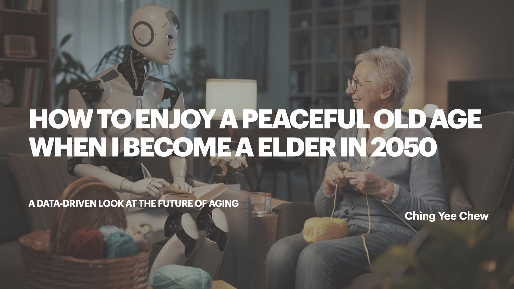
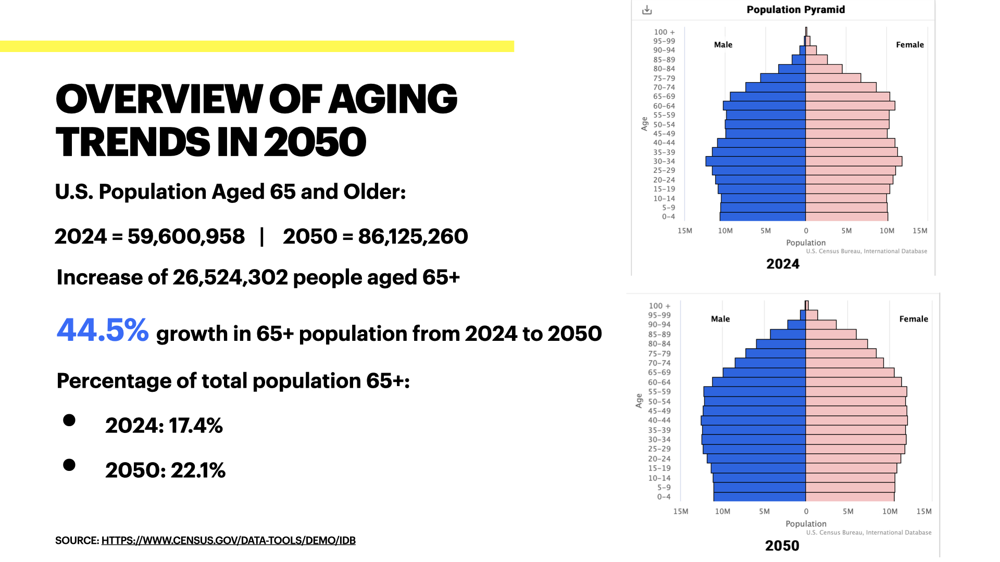
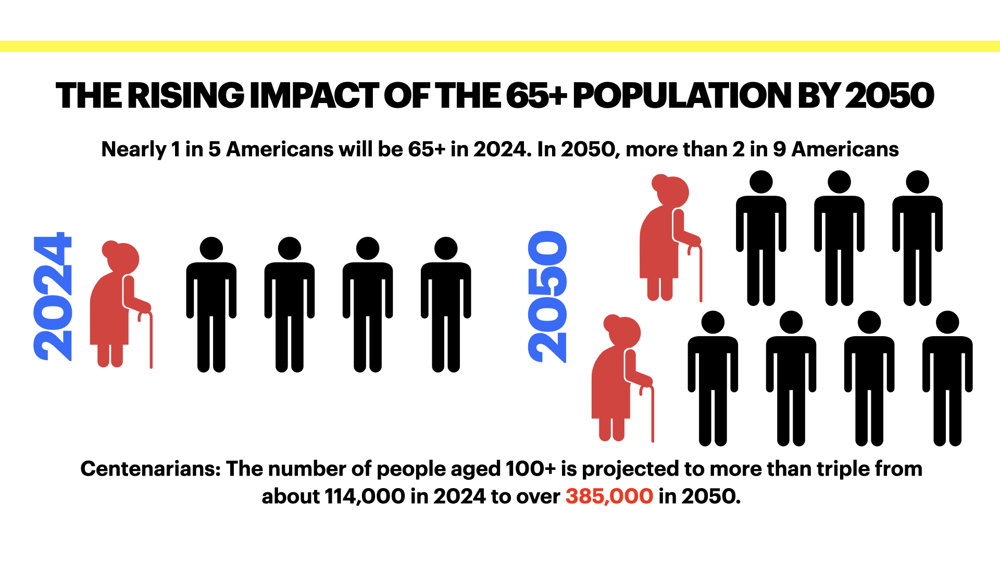
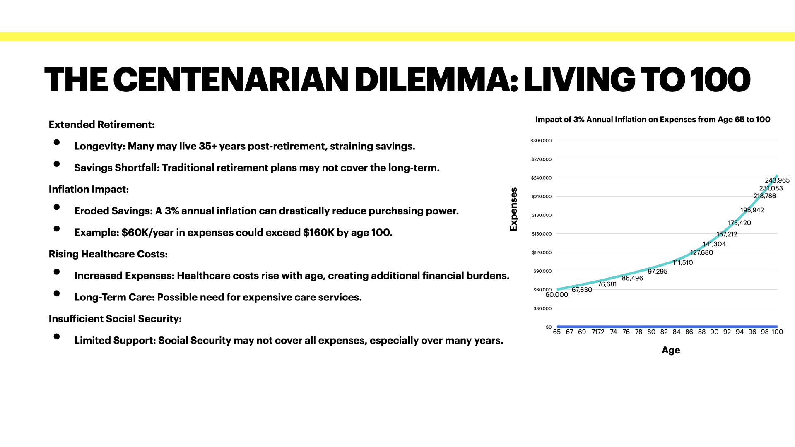

As we approach 2050, the world will see a significant shift in demographics, with the 65+ population growing at an unprecedented rate. This project explores how we can prepare for a secure, fulfilling, and peaceful old age in the face of these changes.

As we approach 2050, the world will see a significant shift in demographics, with the 65+ population growing at an unprecedented rate. This project explores how we can prepare for a secure, fulfilling, and peaceful old age in the face of these changes.

The Growing Aging Population
By 2050, the 65+ age group will have grown by 44.5%, representing a much larger portion of society. With nearly 1 in 5 Americans aged 65 or older by 2024, and more than 2 in 9 by 2050, we must ask: What if I live to 100 years old after retiring at 65? With centenarians expected to more than triple, individuals will face extended retirements, increasing financial, healthcare, and lifestyle challenges.

Financial Realities of Living 35+ Years in Retirement
- Longevity strain on savings: Many traditional retirement plans aren’t designed to support 35+ years of post-retirement living.
- Inflation impact: With a 3% inflation rate, today’s $60K annual expenses could rise to $160K by age 100, reducing purchasing power.
- Healthcare costs: As we age, healthcare expenses increase, and the need for long-term care can create additional financial strain.
- Social Security limitations: Government benefits may not fully cover all costs, making personal savings and investments essential.

How to Secure a Peaceful and Fulfilling Old Age
- Start early: Build a strong retirement fund through smart saving and investing strategies.
- Consider longevity insurance: Options like long-term care insurance can provide financial security in later years.
- Maintain a healthy lifestyle: Regular exercise and a balanced diet can enhance longevity and reduce medical expenses.
- Prioritize mental well-being: Staying connected with family, friends, and community fosters emotional resilience.
- Plan for healthcare costs: Preparing for unexpected medical expenses can prevent financial hardship in old age.
Conclusion
A peaceful and fulfilling old age requires proactive planning today. By saving wisely, investing in our health, and preparing for financial challenges, we can ensure a secure and enjoyable retirement in 2050 and beyond.